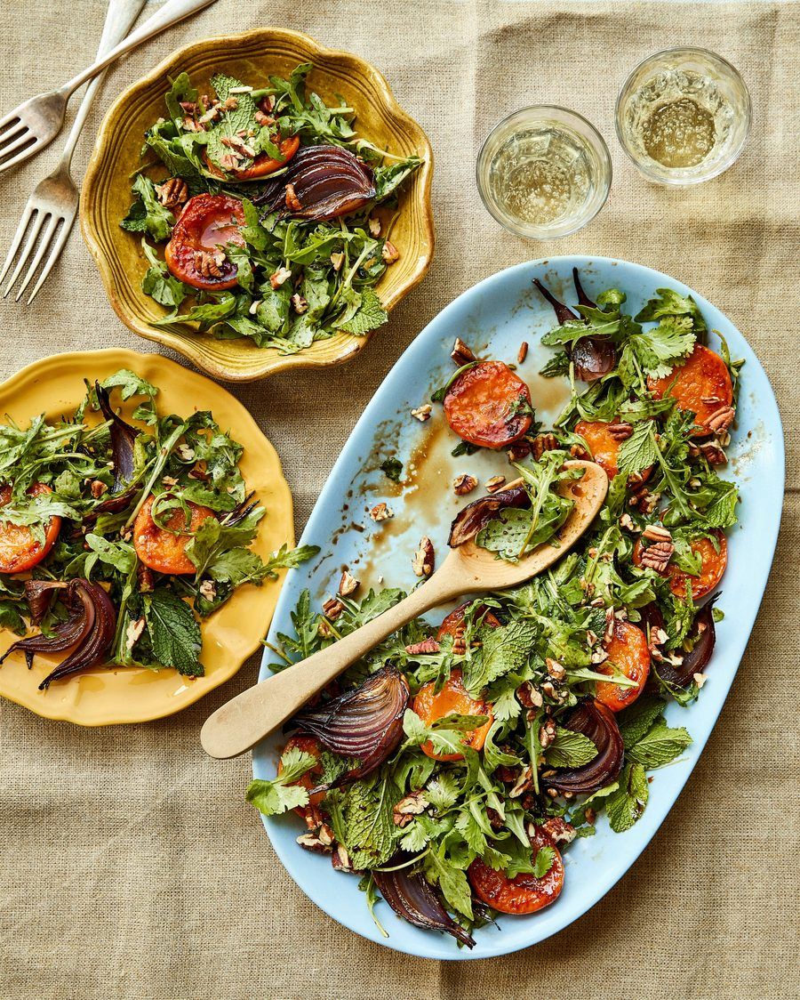

Fruit, red onion and rocket salad

While I like to make loquats the star here, peaches, nectarines, or apricots make excellent alternatives. Serve as a light starter or alongside the ijeh, grilled meats or hearty, nutty grain dishes.
For the dressing
Heat the oven to 200C (180C fan)/gas 6. First, make the dressing by mixing the balsamic, molasses, honey, garlic, a quarter teaspoon of flaked salt and a grind of black pepper. Slowly pour in the oil, whisking constantly, until combined and smooth.
Put the onion wedges into a medium bowl and add one and a half tablespoons of the dressing, along with an eighth of a teaspoon of salt. Toss well to combine, then transfer to a parchment-lined baking tray and roast, tossing once, until softened and slightly caramelised – about 20 minutes. Set aside to cool.
Heat one and a half tablespoons of olive oil in a medium frying pan. Add the halved fruit cut side down and fry for two to three minutes, then flip and cook for two minutes more, or until slightly caramelised. Remove from the pan and set aside.
Put half the roast onion in a large mixing bowl along with the rocket, herbs, half the pecans, a half-teaspoon of flaked salt, a good grind of black pepper, and half the remaining dressing. Toss well to combine, then transfer to a serving dish, layering the salad and fruit cut side up. Repeat with the remaining salad, onions and fruit, and finish with the remaining toasted nuts.